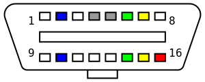

On-board diagnostics (OBD) is an automotive term referring to a vehicle's self-diagnostic and reporting
capability. OBD systems give the vehicle
owner or repair technician access to the status of the various vehicle sub-systems. The amount of
diagnostic
information available via OBD has
varied widely since its introduction in the early 1980s versions of on-board vehicle computers. Early
versions of OBD would simply illuminate a
malfunction indicator light or "idiot light" if a problem was detected but would not provide any
information
as to the nature of the problem.
Modern OBD implementations use a standardized digital communications port to provide real-time data in
addition to a standardized series of
diagnostic trouble codes, or DTCs, which allow a person to rapidly identify and remedy malfunctions
within
the vehicle.

OBD-II provides access to data from the engine control unit (ECU) and offers a valuable source of
information when troubleshooting problems inside a vehicle. The SAE J1979 standard defines a method for
requesting various diagnostic data and a list of standard parameters that might be available from the
ECU.
Manufacturers are not required to implement all PIDs listed in J1979 and they are allowed to include
proprietary PIDs that are not listed. The PID request and data retrieval system gives access to real
time
performance data as well as flagged DTCs. Individual manufacturers often enhance the OBD-II code set
with
additional proprietary DTCs.
Mode $01 is used to identify what powertrain information is available to the scan tool.
Mode $02 displays Freeze Frame data.[19]
Mode $03 lists the emission-related "confirmed" diagnostic trouble codes stored. It displays exact
numeric, 4 digit codes identifying the faults.
Mode $04 is used to clear emission-related diagnostic information. This includes clearing the stored
pending/confirmed DTCs and Freeze Frame data.
Mode $05 displays the oxygen sensor monitor screen and the test results gathered about the oxygen
sensor. There are ten numbers available for diagnostics:
Mode $06 is a Request for On-Board Monitoring Test Results for Continuously and Non-Continuously
Monitored System. There are typically a minimum value, a maximum value, and a current value for each
non-continuous monitor.
Mode $07 is a Request for emission-related diagnostic trouble codes detected during current or last
completed driving cycle. It enables the external test equipment to obtain "pending" diagnostic
trouble
codes detected during current or last completed driving cycle for emission-related
components/systems.
This is used by service technicians after a vehicle repair, and after clearing diagnostic
information to
see test results after a single driving cycle to determine if the repair has fixed the problem.
Mode $08 could enable the off-board test device to control the operation of an on-board system,
test, or
component.
Mode $09 is used to retrieve vehicle information.
Mode $0A lists emission-related "permanent" diagnostic trouble codes stored. As per CARB, any
diagnostic
trouble codes that is commanding MIL on and stored into non-volatile memory shall be logged as a
permanent fault code.
OBD-II diagnostic trouble codes OBD-II diagnostic trouble codes (DTCs) contain 1 letter and 4 numbers,
and
are divided into the following
categories:
B – Body (includes air conditioning and airbag) (1164 codes)
C – Chassis (includes ABS) (486 codes)
P – Powertrain (engine and transmission) (1688 codes)
U – Network (wiring bus) (299 codes)
J1962 – Defines the physical connector used for the OBD-II interface.
J1850 – Defines a serial data protocol.
J1978 – Defines minimal operating standards for OBD-II scan tools
J1979 – Defines standards for diagnostic test modes
J2012 – Defines standards trouble codes and definitions.
J2178-1 – Defines standards for network message header formats and physical address assignments
J2178-2 – Gives data parameter definitions
J2178-3 – Defines standards for network message frame IDs for single byte headers
J2178-4 – Defines standards for network messages with three byte headers*
J2284-3 – Defines 500K CAN physical and data link layer